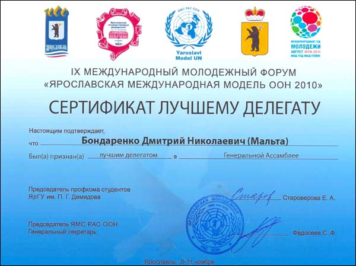
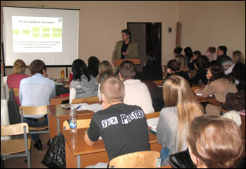
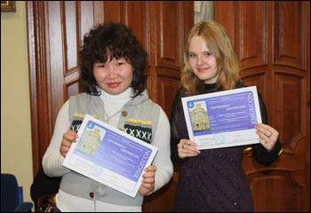
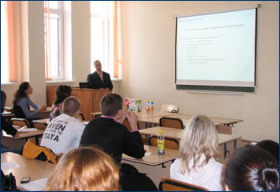
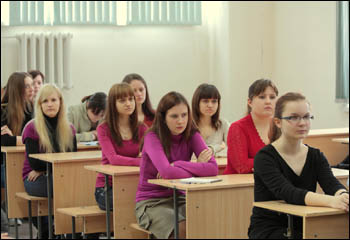
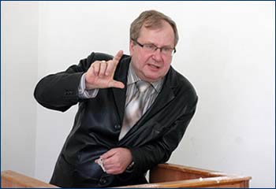

|
Факультет международных отношений Воронежского государственного университета информирует о проведении Третьей учебной конференции студентов-первокурсников "Актуальные проблемы международных отношений и мировой экономики: ретроспективный анализ и глобальные тенденции современности".
Конференция состоится 18 декабря 2010 года. Начало работы секций конференции: 13.00. Место проведения: Воронежский государственный университет, корпус № 8.
Приглашаются все желающие!
Со 2 по 4 декабря 2010 года в Санкт-Петербургском государственном университете телекоммуникаций им. проф. М.А. Бонч-Бруевича состоялся XII Международный Балтийский студенческий форум «Глобальные и региональные коммуникации: настоящее и будущее», в котором приняли участие студенты Университетов России и зарубежных государств.
Состав участников отличался широкой географией. С докладами и сообщениями выступили молодые ученые из Украины, Беларуси, Латвии, Эстонии. Среди российских участников были делегаты Университетов Москвы, Санкт-Петербурга, Самары, Сочи, Чебоксар, Нижневартовска, Воронежа, Томска, Ростова-на-Дона, Брянска, Иркутска.
Работа конференции была организована в восьми секциях:
- Безопасность: социальная, информационная, региональная;
- Имидж России: желаемое и реальность;
- Интернет – территория свободы или несвободы;
- Межкультурные коммуникации в процессе глобализации (на английском языке);
- Мода на здоровый образ жизни;
- Процесс продвижения: от исследования к технологиям;
- Регионосоздание и проблемы европейского сотрудничества;
- Секреты бренда.
Участники Конферецнии посетили различные мероприятия, такие как круглые столы, мастер-классы, пленарные заседания, проводимые ведущими специалистами в сфере мирвоой экономики и внешнеэкономической деятельности. Для гостей данного Форума были организованы различные экскурсии.
СПбГУТ им. Бонч-Бруевича, который занимает лидирующие позиции в рейтинге Университетов северной столицы, а также успешно конкурирует со многими европейскими высшими учебными заведениями, смог организовать конференцию на высоком уровне. Хотелось бы отметить чёткую отлаженность и скоординированность работы организаторов.
Студентки факультета международных отношений ВГУ Татьяна Глазунова и Дарья Савченко, принявшие участие в секции «Межкультурные коммуникации в процессе глобализации» выступили с коллективным докладом по теме «Headhunters: международные агентства по набору персонала» на английском языке. Присутствующие отметили высокий уровень подготовки, хорошее владение языком. По итогам активного участия в работе конференции воронежские участники заняли второе место.
Студентка Факультета международных отношений Елизавета Садилова, обучавшаяся в Государственном Университете Дикинсон получила диплом о присуждении степени Бакалавра Наук по направлению "Бизнес-администрирование".
Елизавета Садилова обучалась в Университете Дикинсона с 2008 по 2010 год. Обучение в американских университетах и получение международно признаваемых дипломов стало доброй традицией Факультета международных отношений.
С 14 по 19 ноября текущего года состоялся визит делегации Факультета международных отношений Воронежского государственного университета в Университет г. Умео, Швеция. В состав делегации вошли декан факультета, доктор экономических наук, профессор О.Н. Беленов и координатор международных проектов Департамента международных программ ФМО ВГУ А.А. Болдырихин.
Целью визита было участие в конференции по академическим обменам, которая прошла на базе Университета г. Умео.

Основными темами, обсуждавшимися на конференции, были расширение взаимодействия между вузами-партнерами, разработка и внедрение новых программ академических обменов, повышение количества участников данных программ как со стороны студентов, так и со стороны профессорско-преподавательского состава.
В работе также принимали участие представители вузов Австрии, Канады, Китая, Чехии, Финляндии, Германии, Италии, Норвегии, Словении и Испании. Участники активно делились своим опытом взаимодействия с зарубежными вузами в рамках различных программ.
Для российской стороны важным итогом конференции стало обсуждение возможностей дальнейшего развития сотрудничества с Университетом г. Умео по программе профессорско-преподавательского обмена с перспективой подписания в будущем соглашения о двойном дипломе. Шведская сторона подтвердила свое намерение продолжать и расширять совместную работу с ФМО ВГУ. Свою особенную заинтересованность в подобных проектах с ВГУ также выразили Пражский экономический университет, Университет г. Росток (Германия) и Университет г. Сарагоса (Испания).
В настоящее время ведется разработка соответствующих дополнений к уже существующему договору о сотрудничестве между Факультетом междугародных отношений ВГУ и Университетом г. Умео, которые вступят в силу в следующем году.
15–16 ноября 2010 г. к.и.н. доц. С.И. Дмитриева и к.и.н. доц. Е.В. Кардашова представляли Центр германских политических исследований ФМО на международной научной конференции «Вилли Брандт и новая Европа», проходившей в Волгограде и посвященной 40-летию подписанию Московского договора между ФРГ и СССР.
В числе участников конференции, проводившейся Фондом Фридриха Эберта, были чешские и немецкие ученые, представители крупнейших научных центров Москвы и регионов России. Сотрудники Центра германских политических исследований ФМО выступили с докладами и приняли участие в дискуссии.
С 8 по 11 ноября студенты Факультета Международных отношений приняли участие в IX Международном молодежном форуме «Ярославская Международная Модель ООН 2010», проходящем на базе Ярославского Государственного Университета им. П.Г. Демидова при поддержке Правительства Ярославской области и Российской Ассоциации Содействия ООН.

В данном мероприятии приняли участие 13 студентов Факультета международных отношений, которые работали в рамках двух секций:
- Азизов Антон – 3 курс ( «Генеральная Ассамблея»),
- Артемова Анна – 3 курс ( «Генеральная Ассамблея»),
- Бондаренко Дмитрий – 3 курс ( «Генеральная Ассамблея»),
- Варфоломеева Дарья – 3 курс ( «Совет Безопасности»),
- Власова Елена – 2 курс ( «Генеральная Ассамблея»),
- Гаюн Денис – 2 курс ( «Генеральная Ассамблея»),
- Дедов Александр – 2 курс («Генеральная Ассамблея»),
- Зоткин Максим – 4 курс ( «Совет Безопасности»),
- Курапова Юлия – 2 курс ( «Генеральная Ассамблея»),
- Маштакова Ольга – 2 курс ( «Генеральная Ассамблея»),
- Сундеева Ксения – 2 курс ( «Генеральная Ассамблея»),
- Татаринцева Ольга – 3 курс ( «Совет Безопасности»),
- Харина Ольга – 3 курс ( «Совет Безопасности»).
В ходе Форума студентам удалось проявить себя в качестве хороших организаторов и занять активную позицию во время формирования коалиций. Работа в Генеральной Ассамблее подразумевала принятие Резолюции. Из 4 исходных вариантов рабочим, в ходе общего голосования, был выбран именно тот вариант Резолюции, который был предложен коалицией, в составе которой были воронежские студенты.
На протяжении всей работы Форума, от представления позиции выбранной страны до пленарного заседания, студентам удавалось активно отстаивать интересы представляемых ими делегаций, показывая высокий уровень подготовки и заинтересованность в работе Форума. Не смог не заметить активность и подготовленность воронежских делегатов и Секретариат Форума, присудивший звание «Лучший Делегат» в секции «Генеральная Ассамблея» Бондаренко Дмитрию и в секции «Совет Безопасности» Зоткину Максиму.

По итогам Форума всем были вручены сертификаты участника, подтверждающие представляемые страны и секции, в которых работали студенты.
5 и 6 ноября 2010 года по инициативе деканата факультета международных отношений и кафедры маркетинга экономического факультета ВГУ состоялись мастер-классы по темам: Построение потребительского бренда (от идеологии до сюжетов рекламы) и Корпоративный брендинг (от ключевых рынков, идеологии влияния на каждый
из них до мероприятий).
Автор и ведущий: Виктор Тамберг (г. Санкт-Петербург),
бизнес-консультант, управляющий партнер консультационного бюро «Тамберг & Бадьин», автор книг: «Бренд. Боевая машина бизнеса», «Брендинг в розничной торговле», «Новая рыночная ниша».
декан факультета международных отношений проф. д.э.н. Олег Николаевич Беленов открывает мастер-класс
и представляет Виктора Тамберга

Виктор Тамберг: "Бренд строится вокруг уникальных потребительских характеристик продукта"
участники мастер-класса Виктора Тамберга
С 25 по 30 октября студенты специальности «Мировая экономика» факультета международных отношений приняли участие в Международной Студенческой Олимпиаде «Предпринимательство и менеджмент – 2010», проходящей на базе Санкт-Петербургского инженерно-экономического университета (ИНЖЭКОН).
В данном мероприятии приняли участие 6 студентов кафедры Международной экономики и внешнеэкономической деятельности:
- Жукова Юлия – 5 курс (секция «Менеджмент организации»),
- Мартынова Дарья – 5 курс (секция «Менеджмент организации»),
- Паршина Елизавета – 5 курс (секция «Маркетинг»),
- Ракова Екатерина – 5 курс (секция «Мировая экономика»),
- Соболева Олеся – 3 курс (секция «Менеджмент туризма»),
- Цебекова Баира – 3 курс (секция «Менеджмент туризма»).
Руководителем делегации от Воронежского государственного университета была назначена преподаватель кафедры МЭиВЭД Зенина Ирина Викторовна.

По итогам олимпиады всем участникам были вручены сертификаты участника, Паршина Елизавета получила диплом победителя за первое место в первом туре по секции «Маркетинг», а также диплом за второе место в командном зачете второго тура.

На факультете международных отношений состоялась презентация конкурсной программы компании ЗАО «МОЛВЕСТ» для студентов кафедры мировой экономики и внешнеэкономической деятельности.
Студентам было предложено за 1 месяц разработать несколько практических тем и публично представить свои результаты. Презентация итогов состоится в начале декабря на базе факультета.
Компания «МОЛВЕСТ» рассматривает возможность долгосрочного сотрудничества с Воронежским госуниверситетом, в частности, с факультетом международных отношений с целью поиска молодых талантов.

В числе основных видов сотрудничества компания предусматривает:
- годовые гранты за научную разработку заданных компанией тем,
- ежемесячные стипендии студентам, которые не только проявят свои умения и навыки, но и докажут их практическую эффективность,
- разовые премии и подарки за проявленные навыки в маркетинге.
10–14 октября состоялся официальный визит на ФМО ВГУ представителей факультета международного менеджмента университета FH-JOANNEUM старшего преподавателя Хильдегард Лиебл и преподавателя Вероники Вульф. За время визита были организованы встречи с деканом ФМО ВГУ проф. д.э.н. Беленовым О.Н., представителями руководства факультета и профессорско-преподавательского состава с целью обсуждения перспектив дальнейшего сотрудничества.

встреча делегации Университета FH-JOANNEUM с руководством ФМО ВГУ
С участием преп. Вульф состоялось обсуждение методики преподавания немецкого языка как иностранного и русского языка для иностранных студентов на базе Института Международного Образования при ВГУ.
С участием ст. преп. Лиебл был проведен научно-методический семинар по вопросам преподавания студентам дисциплины «Международный маркетинг», организованный на базе факультета международных отношений и экономического факультета ВГУ. Студенты ФМО 5 курса специальности «Мировая экономика» и 2–3 курса направления «Регионоведение» получили возможность принять участие в семинаре по актуальным проблемам современного маркетинга. Также состоялось обсуждение учебной программы курса «Управление конфликтами» для совместной магистерской программы «Бизнес в развивающихся рынках», начало реализации которой планируется со следующего года.
В качестве перспектив научной и учебной деятельности была обозначена возможность подготовки совместных сборников статей и создание обучающих кейсов для студентов ФМО специализации «Маркетинг».
С 29 сентября по 6 октября в рамках договора о сотрудничестве между ФМО ВГУ и Государственным Университетом Дикинсона от 14 апреля 2010 г. состоялся официальный визит на ФМО ВГУ делегации из Государственного университета Дикинсона (США) в составе которой присутствовали: профессор факультета бизнес администрирования Скотт Хэнсон, профессор факультета политических наук Стивен Доэрти, профессор факультета биологии, орнитолог Маргарет Койл, координатор международных программ Виктор Юдин.
встреча делегации ГУД с руководством ФМО ВГУ
встреча делегации ГУД с руководством ФМО ВГУ
Целью визита было обсуждение существующего соглашения с Воронежским государственным университетом и расширение сотрудничества.
В ходе визита состоялись лекции профессора С. Доэрти о внешней политике США на современном этапе для студентов ФМО и лекции профессора С. Хэнсона о возможностях обучения в Государственном университете Дикинсона, особенностях американской системы образования и перспективах развития экономики США для студентов ФМО и Бизнес Школы экономического факультета.

встреча делегации ГУД с администрацией ВГУ
Факультетом также были организованы встречи профессора М. Койл с заведующим кафедрой зоологии и паразитологии биолого-почвенного факультета ВГУ и профессорско-преподавательским составом кафедры с целью обмена опытом исследования птиц, а также презентация профессора М. Койл о результатах многолетнего исследованиям белокрылых орланов и беркутов в штате Северная Дакота США для студентов биолого-почвенного факультета.
По итогам визита планируется организовать совместные летние языковые школы для подготовки студентов, желающих принять участие в программах международного обмена.
25–30 сентября в рамках договора о сотрудничестве между ФМО ВГУ и Калифорнийским Лютеранским Университетом от 12 мая 2010 г. на факультете международных отношений ВГУ состоялся официальный визит директора Института Финансов Калифорнийского Лютеранского Университета (США) профессора Сомната Базу.
встреча профессора С. Базу с руководством ВГУ
В ходе визита был проведен семинар для преподавателей факультета международных отношений и экономического факультета «Финансовый кризис 2008 и его последствия». Также состоялись встречи со студентами факультета международных отношений и Бизнес Школы экономического факультета, где профессор Базу рассказывал о перспективах развития мировой экономики и отвечал на вопросы студентов о современном состоянии международного финансового рынка. Плодотворными оказались дискуссии, организованные Торгово-промышленной и Инвестиционной палатами Воронежской обл., относительно стратегии выхода из мирового финансового кризиса.
встреча профессора С. Базу с руководством Торгово-Промышленной Палаты Воронежской Области
встреча профессора С. Базу с представителями Инвестиционной Палаты
встреча профессора С. Базу с представителями Инвестиционной Палаты
В качестве дальнейшего расширения сотрудничества была предложена организация совместных научных публикаций и развитие студенческих контактов.
Уважаемые учащиеся и родители!
Факультет международных отношений объявляет набор !
Срок обучения – 7.5 месяцев: с 3 октября 2010 г. по 15 мая 2011 г.
Подготовка ведется преподавателями университета – экспертами по проведению ЕГЭ по следующим предметам: математика, иностранный язык, русский язык, история.
Обучение проходит в камерной обстановке, в небольших группах по воскресеньям с 10.00 до 15.50.
По вопросам оформления обращайтесь к по телефону 27-74-02 с понедельника по пятницу с 13.00 до 18.00
(ост. Пам. Славы, уч. корп. № 8, ауд. 108, 1 этаж).
Факультет международных отношений ВГУ
приглашает учащихся школ посетить открытую лекцию директора Института финансов, профессора Калифорнийского Лютеранского университета С. Базу на тему .
Лекция состоится 29 сентября 2010 г. с 9.45 до 11.30 в уч. корпусе № 8 (Московский пр-т, 88, ост. Памятник Славы), ауд. 316 (3 этаж).
Лекция будет проводиться на английском языке без перевода и предоставит вам возможность применить свои языковые знания на практике, а также получить новые знания относительно американского опыта борьбы с финансовым кризисом и выбора финансовых стратегий!
По организационным вопросам вы можете обратиться к заместителю декана факультета международных отношений
Тел.: 24-74-02, 8-920-215-00-75.
На факультете международных отношений ВГУ прошла международная научно-практическая конференция «Россия и ее регионы в системе международных экономических отношений».
На открытии конференции с приветственным словом к собравшимся обратился декан факультета международных отношений, профессор О.Н. Беленов. В своём выступлении он подчеркнул значимость и важность развития международных связей вузов – участников Болонского процесса и развития исследований в области международного сотрудничества России и ее регионов. На пленарное заседание было вынесено 6 докладов авторитетных специалистов из Воронежа, Москвы, Граца (Австрия).
В рамках конференции состоялись 3 секционных заседания на темы «Современные проблемы мировой экономики» и «Россия и ее регионы в системе международных экономических отношений» и «Место и роль международного экономического образования в решении проблем региональной экономики», на которых прозвучало более 20 сообщений.

В ходе конференции прозвучали доклады декана факультета международного менеджмента Университета прикладных наук Ионнеум г. Грац (Австрия) профессора Киндел Венднер Дорис «Процессы интеграции в ЕС», вице-президента ТПП Воронежской области С.В. Питровского «О состоянии и перспективах развития ТПП Воронежской области». Большой интерес вызвала презентация совместной работы студентов специальности «мировая экономика» А. Бобровникова, Е. Сумской, В. Чистяковой и А. Шестакова «Статистический прогноз развития мировой и национальных экономик на период 2010-2012 гг.», занявшей первое место в конкурсе научных студенческих проектов на проходившей 19-23 апреле 2010 г. в Киеве международной научной школы.
По материалам конференции планируется издание сборника научных трудов.
Пресс-служба ВГУ
Информация предоставлена доцентом ФМО ВГУ Д.Г. Ломсадзе
Фото Ю.С. Лебедева
На факультете международных отношений при помощи кафедры английского языка в профессиональной международной деятельности состоялось открытое занятие по английскому языку студентов-международников 2 курса на тему: «Публичное политическое выступление на английском языке» (из курса «Подготовка и проведение иноязычных публичных выступлений»).
На факультете международных отношений состоялось заседание Научного Общества Учащихся.
На факультете международных отношений ВГУ прошла региональная научная конференция «Проблемы международных отношений в изменяющемся мире: глобальный кризис и противоречия регионального развития».


В мероприятии приняли участие представители Российской академии государственной службы при Президенте РФ, Московской духовной академии (Свято-Троицкая Сергиева Лавра, г. Сергиев Посад), Воронежского государственного архитектурно-строительного университета, Воронежской государственной лесотехнической академии, Воронежского государственного университета.
Работа осуществлялась в рамках трех секций: «Геополитика глобализирующегося мира», «Современное государство и региональная безопасность», «Современные международные и региональные исследования: культура, религия, политика».
Наибольший интерес вызвали доклады профессора факультета международных отношений ВГУ А.А. Слинько о политическом дуализме современного украинского государства,

доцента факультета журналистики ВГУ Д.Н. Нечаева о сравнительном анализе региональной политики стран Европы и РФ, иерея Стефана Домусчи о проблемах соотношения общественной и индивидуальной нравственности, доцента факультета международных отношений Д.Г. Ломсадзе о российском бизнесе как этической аномалии.
По материалам конференции планируется публикация сборника статей.
Пресс-служба ВГУ
Фото А.С. Исаева
Объявляется набор студентов с дипломами бакалавров экономики/менеджмента, дипломами специалистов по юридическим или экономическим специальностям, дипломами магистров экономики/менеджмента, а также студентов выпускных курсов для подготовки к получению квалификационного аттестата "Консультант по налогам и сборам".
Это дополнительные профессиональные компетенции, которые значительно повысят ваши конкурентные преимущества на рынке труда (см. подробнее).
В подразделе "Студентам" раздела "Учебная деятельность" опубликованы вопросы к зачетам и экзаменам, литература по изучаемым
курсам и тематика курсовых и дипломных работ.
|